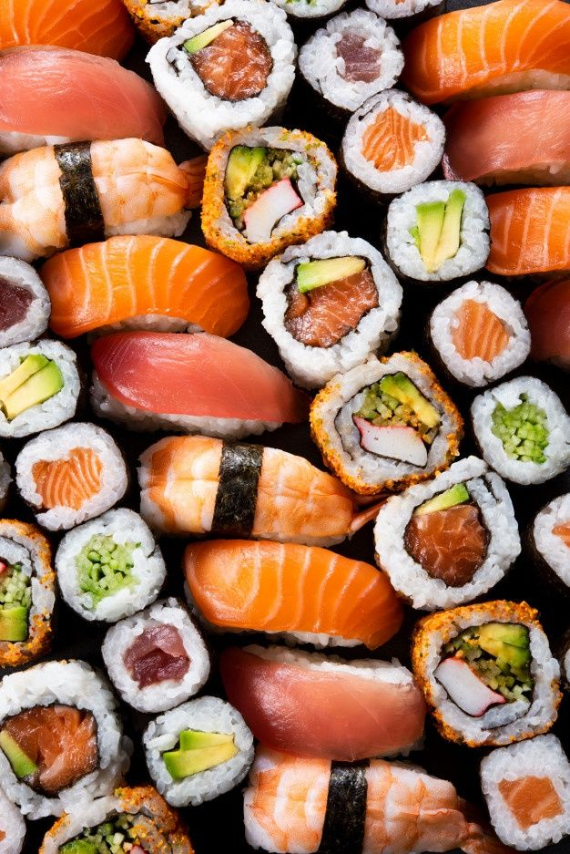
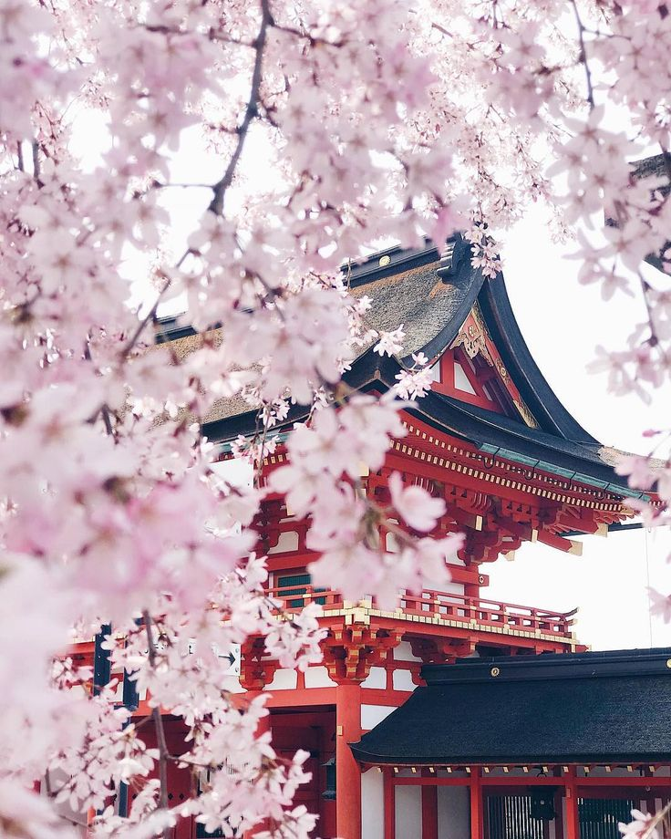
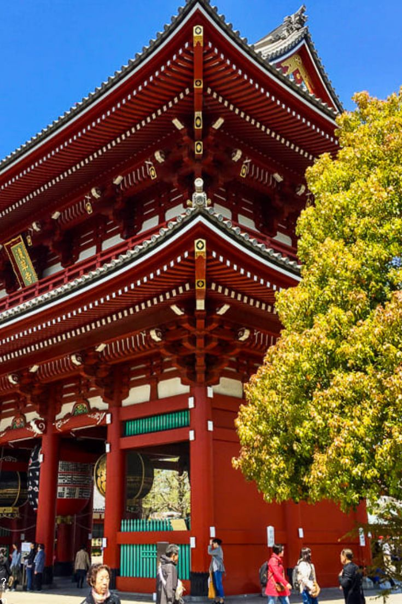

Viajar! Perder países!
Ser outro constantemente,
Por a alma não ter raízes
De viver de ver somente!
Fernando Pessoa

Lisboa

Milão

Londres

Praga

Roma

Varsóvia

Reykjavik

Budapeste

Bruxelas

Viena

Paris

Tóquio
BOM
DIA
Passa o rato aqui
Foge, há um gato!
Tóquio, capital do Japão

Sushi
Sushi em espelho
Sushi inclinado

Sakura
Sakura em espelho
Sakura inclinada

Templo
Templo em espelho
Templo inclinado